- 주제: 스펙트럼 감산 기반의 소음 제거를 M55M1에 구현하고 키워드 스포팅 정확도를 높이는 DSP 사례
- 문서 구성: 사례 소개, 개발 흐름, 이론, Python 시뮬레이션, C 구현, Helium 최적화, KWS 통합, 결론
- 입력/출력: DMIC 음성 입력을 정제한 뒤 MFCC 및 KWS 파이프라인으로 전달
- 핵심 가치: 배경 소음이 큰 환경에서 키워드 인식의 안정성과 정확도를 높이는 것
| 대목차 | HTML 반영 내용 |
|---|---|
| 사례 소개 | 프로젝트 개요, 기대 목표, 실제 성능 향상, I/O 모듈 |
| 개발 흐름 | Python 검증 → Helium 기반 구현 → KWS 통합 |
| 이론 | 신호 모델, STFT, 스펙트럼 감산, ISTFT |
| Python 시뮬레이션 | 데이터셋, librosa 처리, STOI 평가 |
| M55M1 구현 | Helium, 버퍼, FFT/IFFT, DSP 파이프라인 |
| KWS 통합 | y 입력 시작, DMIC → denoise → MFCC → inference |
먼저 Python으로 스펙트럼 감산 알고리즘을 검증한 뒤, 같은 개념을 ARM Helium 기술을 활용한 C 코드로 옮겨 M55M1 보드에서 실시간 소음 제거를 수행하고, 최종적으로 키워드 인식 모듈에 연결하는 구조라고 설명합니다.
핵심은 새로운 대형 딥러닝 모델을 추가하는 것이 아니라, 비교적 가벼운 DSP 전처리를 앞단에 넣어 기존 키워드 인식 모듈이 더 좋은 입력을 받게 만드는 것입니다.
| 항목 | 내용 |
|---|---|
| 알고리즘 | Spectral Subtraction |
| 검증 환경 | Python + librosa/soundfile/scipy |
| 임베디드 구현 | C + DSP + ARM Helium |
| 최종 연결 | Denoise → MFCC → Keyword Spotting |
- IoT, 스마트 공장, 임베디드 환경에서 음성 처리 기술의 중요성이 커지고 있습니다.
- 산업 환경과 가정 환경의 배경 소음은 음성 인식 정확도를 크게 떨어뜨립니다.
- 따라서 음성 인터랙션을 안정적으로 제공하려면 전처리 단계의 소음 제거가 중요합니다.
즉 이 문서는 음성 인식 모델 구조 자체를 바꾸는 설명보다, 실제 환경에서 인식률을 높이기 위해 어떤 전처리 블록을 어디에 넣어야 하는지를 보여주는 시스템 설계 문서에 가깝습니다.
- 기존 키워드 인식 모듈은 "yes", "no", "up", "down", "left", "right", "on", "off", "stop", "go" 등 10개 키워드를 지원합니다.
- ARM Helium으로 가속된 스펙트럼 감산을 추가해 시스템 성능을 높입니다.
- 터미널 상호작용 기능을 강화해 사용자가 동작을 쉽게 제어하도록 합니다.
잡음 환경에서 기존 키워드 인식 모듈의 정확도가 69%였고, 스펙트럼 감산 기반 소음 제거를 삽입한 뒤 정확도가 80%로 향상되었다고 보고합니다.
절대값 기준으로 11%p 개선된 셈이며, 이 결과는 모델 교체 없이 입력 품질만 개선해도 후단 KWS 성능이 체감될 정도로 좋아질 수 있음을 보여줍니다.
하드웨어 측면에서는 DMIC와 MEMS 마이크, 전원 모듈, UART 기반 터미널 장치가 함께 동작합니다. 즉 이 프로젝트는 단순 파일 후처리가 아니라, 마이크 입력 수집부터 터미널 제어와 결과 확인까지 포함하는 실시간 보드 실험 환경입니다.
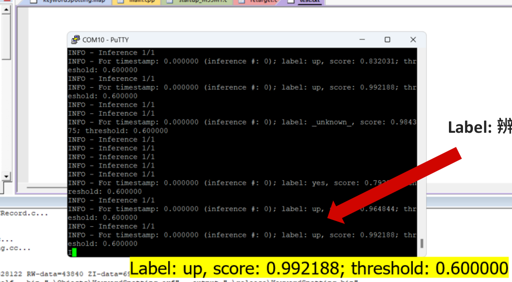
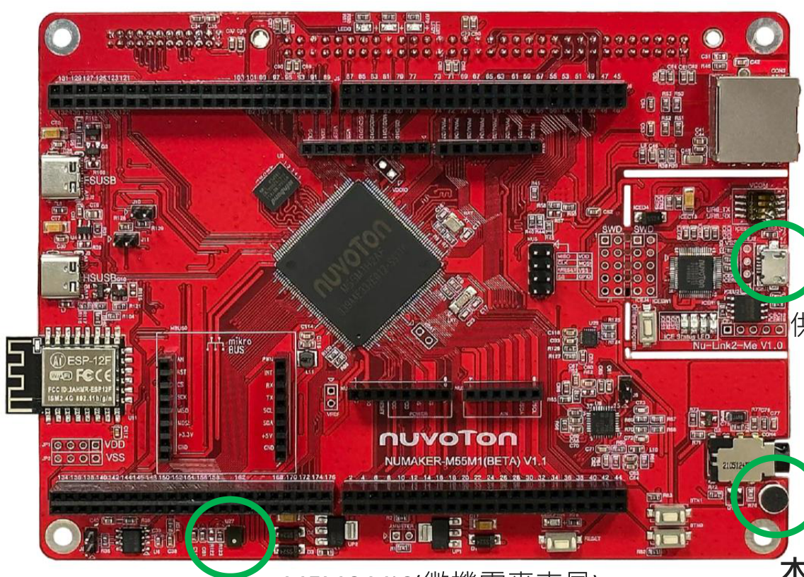
- DSP 소음 제거 모델 설계
- Python으로 소음 제거 효과 시뮬레이션
- ARM Helium 기술을 이용해 개발 보드에 배포
- DSP 소음 제거를 기존 키워드 인식 모듈에 통합
- 터미널 UI 추가
이 순서는 의미가 있습니다. 먼저 PC에서 알고리즘과 파라미터를 검증해 실패 비용을 낮추고, 이후 동일한 절차를 임베디드에 옮겨 성능과 실시간성을 확보하는 방식입니다.
핵심 아이디어는 잡음 스펙트럼과 음성 스펙트럼을 분리해, 음성 스펙트럼에서 배경 잡음 스펙트럼을 빼고, 이후 깨끗한 음성을 재구성하는 것입니다.
시간영역 파형을 직접 깎기보다는 주파수영역에서 잡음 성분을 약화시키는 접근이기 때문에, 계산 구조가 비교적 단순하고 MCU에서도 구현 가능하다는 장점이 있습니다.
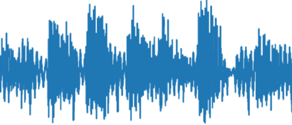
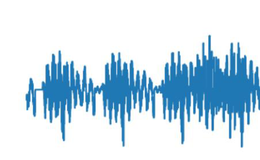
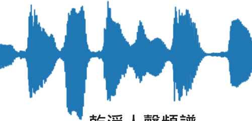
- 잡음이 포함된 음성은 일반적으로 y(t)=s(t)+n(t)로 모델링합니다.
- y(t)는 잡음 포함 음성, s(t)는 깨끗한 음성, n(t)는 배경 잡음입니다.
- 즉 관측 신호에서 잡음 성분을 분리하는 것이 문제의 핵심입니다.
y(t) = s(t) + n(t) y(t): 잡음 포함 음성 s(t): 깨끗한 음성 n(t): 배경 잡음
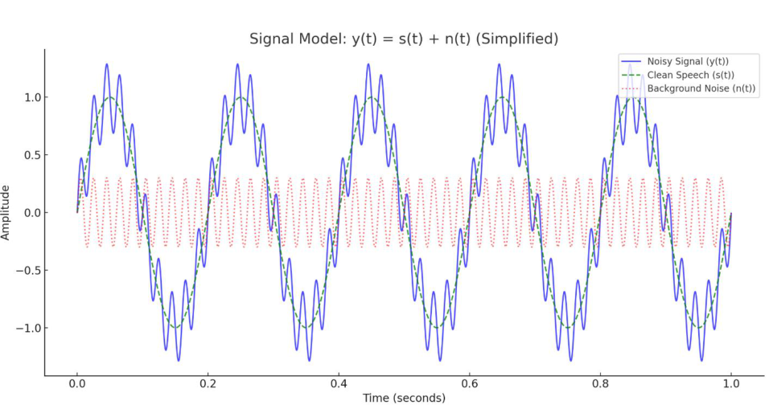
- 음성은 시간에 따라 변하는 신호이므로 전체 구간에 한 번만 FFT를 적용하면 특성이 잘 드러나지 않습니다.
- 작은 프레임 단위로 나누고, 각 프레임에 대해 STFT를 수행해 시간-주파수 특성을 함께 봅니다.
- 수식과 함께 전체 음성을 여러 구간으로 나누어 스펙트럼을 얻는 과정을 설명합니다.
즉 STFT는 긴 음성을 짧은 프레임으로 자르고, 각 프레임의 주파수 성분을 따로 계산하는 절차입니다. 그래야 말소리와 잡음이 시간에 따라 어떻게 변하는지 함께 추적할 수 있습니다.
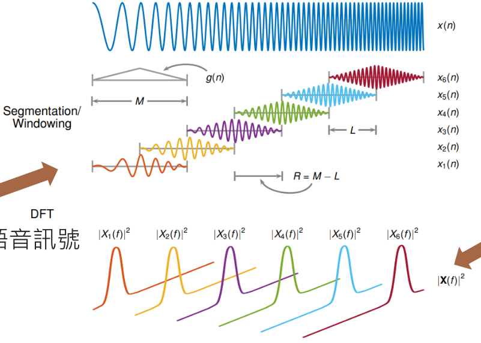
수식은 |S(f)| = |Y(f)| − α|N(f)|입니다. 여기서 α는 잡음 축소 강도를 제어하는 스케일 팩터이며, |Y(f)|는 잡음이 포함된 신호의 magnitude spectrum, |N(f)|는 배경 잡음 스펙트럼입니다.
|S(f)| = |Y(f)| - α|N(f)| α: 잡음 감산 강도 |Y(f)|: noisy speech spectrum |N(f)|: noise spectrum |S(f)|: denoised speech spectrum
α가 작으면 잡음이 충분히 줄지 않고, 너무 크면 말소리까지 손상될 수 있습니다. 따라서 Python 단계에서 α를 조정하며 결과를 확인하는 과정이 매우 중요합니다.
- 감산 후의 magnitude spectrum은 음수 방지를 위해 max 연산으로 바닥값을 둡니다.
- 잡음이 포함된 원신호의 위상 정보를 재사용합니다.
- 마지막으로 ISTFT를 적용해 시간영역 음성 s(t)로 복원합니다.
|S(f)| = max(|Y(f)| - α|N(f)|, 0) s(t) = ISTFT(|S(f)| e^(jφY))
중요한 점은 magnitude만 줄인다고 바로 끝나지 않는다는 것입니다. 원래 noisy signal의 위상 정보를 함께 사용해 inverse STFT를 해야 실제로 들을 수 있는 시간영역 음성이 복원됩니다.
Python을 이용해 스펙트럼 감산을 빠르게 구현하고, 시각적으로 결과를 확인한 뒤 임베디드 코드로 옮기는 전략을 사용합니다. 사용 라이브러리는 librosa, soundfile, scipy, matplotlib입니다.
즉 Python 단계는 최종 제품 코드가 아니라 실험실 역할을 합니다. 파라미터를 바꾸고 결과 파형을 바로 확인할 수 있기 때문에 MCU에서 직접 디버깅하는 것보다 훨씬 효율적입니다.
| 라이브러리 | 역할 |
|---|---|
| librosa | 오디오 로드, STFT/ISTFT, 스펙트럼 계산 |
| soundfile | 복원된 오디오 저장 |
| scipy | 수치 계산 보조 |
| matplotlib | 파형과 스펙트럼 시각화 |
- 배경 잡음을 기준 신호로 수집합니다.
- 음성을 STFT로 주파수 영역으로 변환합니다.
- 잡음 스펙트럼을 음성 스펙트럼에서 뺍니다.
- IFFT로 복원해 소음 제거 음성을 얻습니다.
이 구조는 먼저 잡음의 평균적 특성을 추정해 두고, 이후 각 음성 프레임에서 그 잡음 성분을 빼는 방식입니다. 즉 정적인 필터 하나를 씌우는 것이 아니라, 주파수영역 기준으로 잡음 프로파일을 이용해 음성 프레임을 보정하는 과정입니다.
| 데이터셋 | 설명 |
|---|---|
| Mozilla Common Voice | 다양한 연령과 억양을 가진 대규모 음성 데이터 |
| UrbanSound8K | 도시 환경의 대표 잡음을 포함한 8732개 샘플 |
Common Voice 음성에 UrbanSound8K 잡음을 섞어, 안정적이고 다양한 잡음 음성 샘플을 생성했다고 설명합니다.
이 조합은 사람 목소리와 도시형 잡음을 폭넓게 포함하므로, 알고리즘이 특정 화자나 특정 잡음 패턴에만 맞춰지는 것을 줄이는 데 유리합니다.
- librosa.load로 잡음 포함 음성을 읽습니다.
- 음성 앞 0.5초를 잡음 샘플로 간주합니다.
- librosa.stft로 잡음과 음성의 스펙트럼을 계산합니다.
- 잡음 스케일 팩터 α의 기본값은 2.5입니다.
음성의 앞 0.5초를 잡음 샘플로 간주합니다. 실제 사용 관점에서는 사용자가 말을 시작하기 직전의 짧은 배경 소음을 이용해 현재 환경의 잡음 프로파일을 만드는 방식으로 이해하면 됩니다.
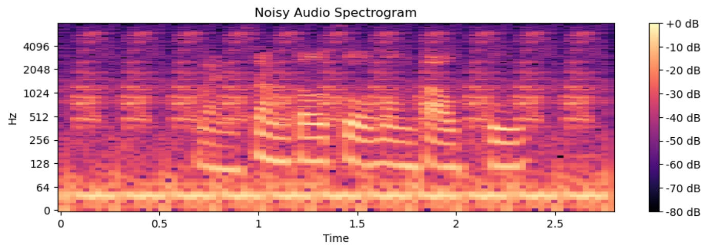
- 시각화된 잡음 스펙트럼으로 감산 대상을 확인합니다.
- librosa.istft로 시간영역 음성을 복원합니다.
- sf.write로 복원된 음성을 저장합니다.
- 전후 파형 비교에서 잡음이 눈에 띄게 줄어든다고 설명합니다.
시각화는 단순 시연용이 아니라 파라미터 튜닝 도구이기도 합니다. 감산이 너무 강하면 음성이 손상되고, 너무 약하면 잡음이 남기 때문에 파형과 스펙트럼을 함께 보면서 균형점을 찾는 것이 중요합니다.
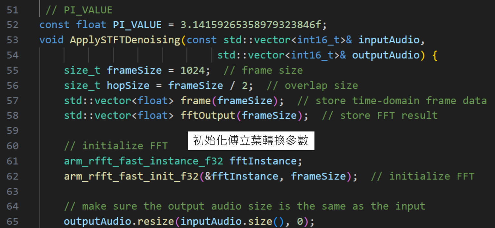
STOI는 0에서 1 사이의 음성 명료도 지표이며, Python 구현 후 0.9 점을 얻었다고 설명합니다. 이는 복원된 음성이 깨끗한 음성에 매우 가깝다는 의미입니다.
- 소음 제거 모델 설계
- Helium 기술을 이용한 배포
- DSP 소음 제거를 공개 키워드 인식 모듈에 통합
- 터미널 페이지 설계
- 개발 보드에서 실제 동작 확인
이 장의 초점은 Python에서 검증된 알고리즘을 MCU에서 실시간으로 돌아가게 만드는 것입니다. 즉 정확도 확인에서 끝나지 않고, 메모리와 연산량 제약 안에서 실제 제품처럼 동작하도록 구조를 재설계하는 단계입니다.
- Helium은 ARM의 MVE(M-Profile Vector Extension) 기능입니다.
- DSP와 ML 작업을 임베디드 환경에서 효율적으로 처리하도록 설계되었습니다.
- 고성능·저전력 특성이 있으며 Cortex-M55 같은 상위 MCU에서 지원됩니다.
Helium이 중요한 이유는 FFT, magnitude 계산, 프레임 단위 벡터 연산처럼 반복적이고 수치량이 많은 처리를 일반 스칼라 코드보다 효율적으로 수행할 수 있기 때문입니다. 같은 알고리즘도 Helium 적용 여부에 따라 실시간성 확보 가능성이 크게 달라집니다.
입력 음성을 버퍼에 저장한 뒤 STFT를 수행하고, 잡음 주파수 성분을 제거한 다음 inverse FFT로 깨끗한 음성을 복원하는 과정을 C 코드와 도식으로 설명합니다.
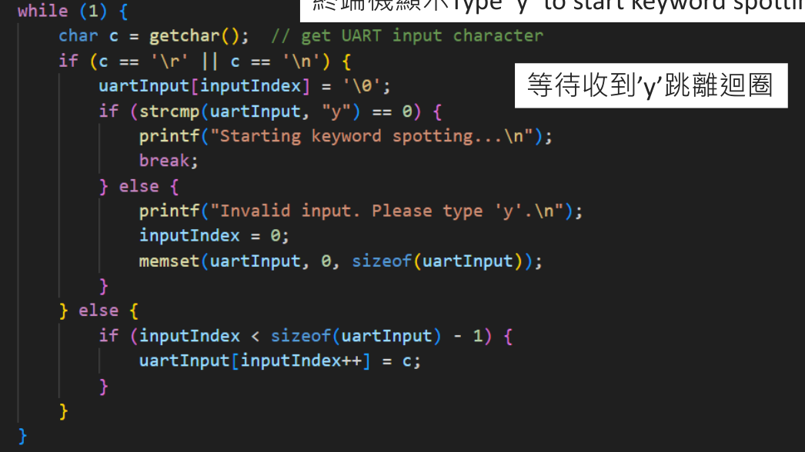
- 초기에는 FFT 파라미터를 초기화합니다.
- 윈도우 크기를 정해 프레임을 나누고 FFT를 수행합니다.
- 잡음 주파수 영역을 제거합니다.
- inverse FFT를 수행해 프레임을 다시 합치고 깨끗한 음성을 얻습니다.
- 에서 0은 FFT 실행, 1은 inverse FFT 실행을 의미합니다.
즉 C 구현은 Python 코드를 단순 번역한 것이 아니라, 고정 버퍼와 프레임 반복 루프를 중심으로 다시 짠 임베디드 파이프라인입니다. 이 구조가 있어야 DMIC에서 들어오는 실시간 스트림을 끊김 없이 처리할 수 있습니다.
원래 키워드 인식 모듈은 실시간 입력 음성을 버퍼에 저장하고 MFCC를 수행한 뒤 추론과 결과 표시로 이어집니다. 이 흐름의 중간에 소음 제거 모듈을 삽입하고, 시작 시 배경 잡음을 미리 녹음하도록 구조를 변경합니다.
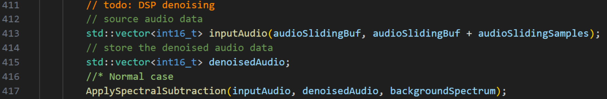
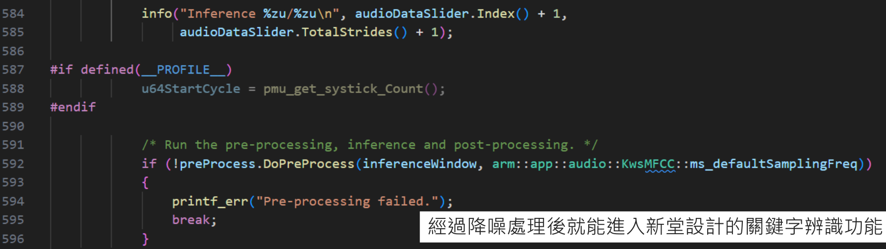
- 터미널에서 y를 입력하면 소음 제거가 포함된 키워드 인식을 시작합니다.
- DMIC로 받은 음성은 프레임 단위로 buffer에 적재됩니다.
- DSP 소음 제거 후 MFCC 처리 단계로 넘어갑니다.
- 그 뒤 기존 Nuvoton 키워드 인식 기능이 후속 추론을 수행합니다.
삽입 위치가 중요한 이유는 MFCC가 바로 음성 특징을 추출하는 단계이기 때문입니다. 여기에 들어가는 입력 신호가 깨끗해질수록 후단 키워드 분류기가 더 안정적으로 동작합니다.
터미널 문구는 Type 'y' to start keyword spotting with Noisy Suppression이며, 사용자가 명시적으로 노이즈 서프레션 모드로 진입하도록 설계되어 있습니다.
결론은 시스템이 배경 잡음 녹음, 실시간 오디오 처리, 키워드 검출, 소음 제거 기술을 하나로 통합했으며, Helium 최적화를 통해 STFT와 스펙트럼 감산을 효율적으로 처리했다고 정리합니다. 또한 MFCC와 기계학습 기반 키워드 인식을 연결해 높은 정확도의 음성 인식을 달성했다고 평가합니다.
미래 과제로는 잡음 분류 기능 추가, 딥러닝 기반 소음 제거 도입, 음성 비서/스마트홈/원거리 음성 인식 등으로의 응용 확장을 제시합니다.
정리하면 이 문서는 단순한 DSP 이론 소개가 아니라, 스펙트럼 감산이라는 비교적 가벼운 알고리즘을 실제 MCU 파이프라인에 삽입해 키워드 인식 품질을 끌어올린 사례 문서입니다. 그래서 Python 실험, C 구현, Helium 최적화, MFCC 연결이 모두 하나의 흐름으로 이해되어야 합니다.
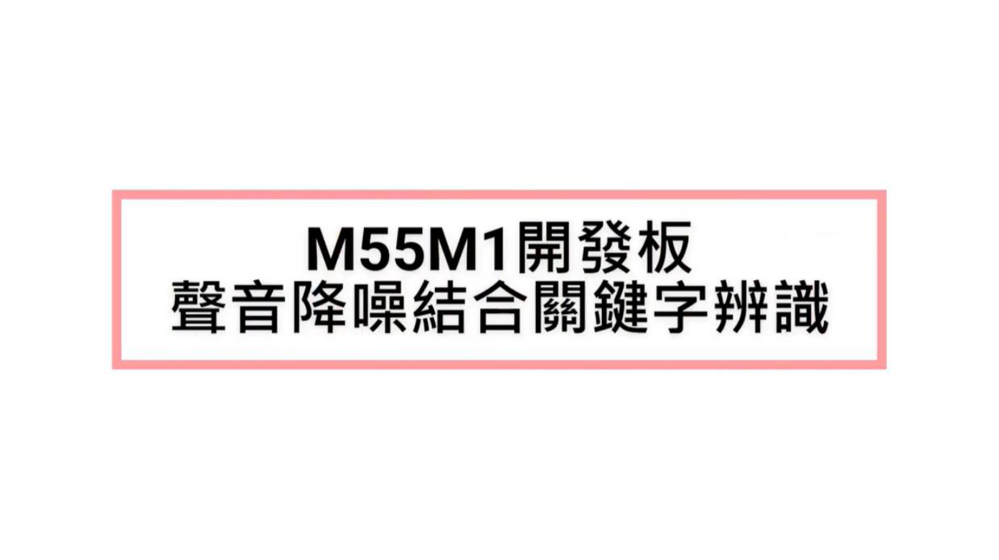